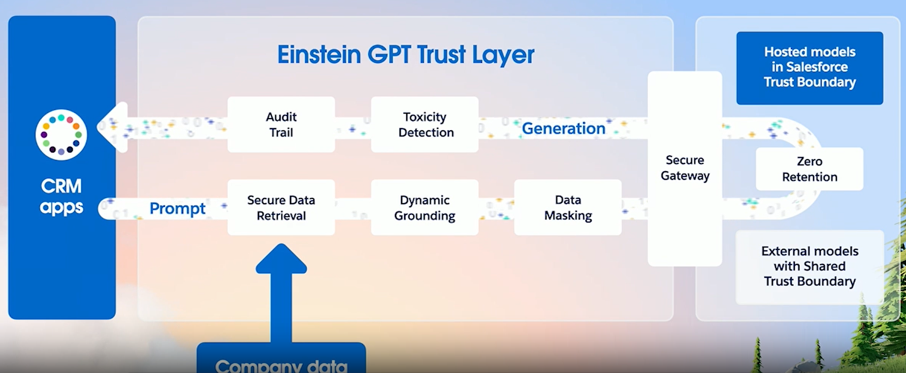
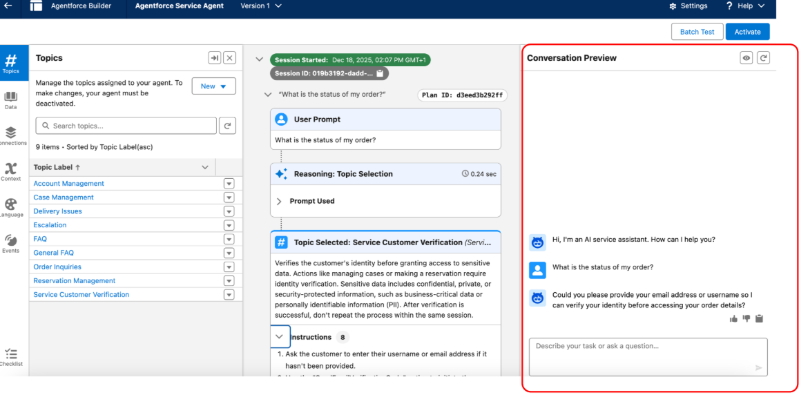

1 Agentforce
The first chapter of this documentation is abount Agentforce, the newest technology of Salesforce that is interacting with a contect on which is changing faster every year.
1.1 Fundamentals
A simple resumme from the website , what are the 5 attributes of Sales Agent?

How do I trust Generative AI?
Einstein GPT Trust Layer

QA
Agentforce - Builder Tools
1.1.0.1 Objective: Explain how to maintain, update, or install prompts and instructions in Agent Builder (light testing, conversation preview).
- Cosmic Solutions is building an Agentforce agent to answer customer questions about order status. During development, the admin wants to quickly test a few sample utterances and see which topics and actions the agent selects for each request before creating automated tests.
Which Agentforce builder tool can be used in this scenario?
Correct Answer is: B. Conversation Preview.
In this scenario, the admin needs to interact with the agent in real time to observe how topics and actions are selected for specific utterances. The Conversation Preview panel in Agentforce Builder allows for manual testing during development, providing immediate feedback on the agent’s behavior and decision-making.
Agentforce Testing Center is designed for batch testing large volumes of utterances and is better suited for automated, large-scale validation. Enhanced Event Logs allow admins to review recorded conversation events after interactions occur, but they do not provide real-time testing during development. Testing Preview is not an actual Agentforce tool and does not exist.

- A Salesforce Administrator needs to configure a solution where support agents receive a generated synopsis of lengthy case history to improve efficiency, while simultaneously ensuring that all cases marked with a “High” priority are immediately and predictably reassigned to a specific queue for compliance purposes. Which solution design aligns with te best practices for selecting between AI and traditional automation?
Correct Answer is: A. Conversation Preview.
The best practice is to use artificial intelligence for tasks that require interpretation, such as summarizing unstructured data, while relying on traditional automation for tasks requiring certainty. AI is ideal for generating synopses from lengthy histories as it can reason and condense information contextually. In contrast, compliance-driven actions like reassignment based on priority require deterministic, predictable outcomes, which are best handled by tools such as case assignment rules to ensure the action happens exactly the same way every time.
1.1.0.2 Describe the capabilities and use cases of Agentforce (scenarios about use cases, when it’s appropriate to use AI, security, troubleshooting agent permissions).
A sales manager asks Agentforce to summarize a specific confidential Opportunity record but receives a response the information cannot be retrieved. An administrator verifies that the Opportunity exists and that other managers can successfully access it using Agentforce. What is the primary security mechanism causing this results?
Correct Answer is: A. Conversation Preview.
Agentforce operates by inheriting the access permissions of the user interacting with it. If the sales manager does not have the necessary object, field, or record-level access, such as sharing rules, to view the specific Opportunity record, the AI agent will be unable to retrieve or display that information.
Agentforce does not use a separate, overriding permission set for record access, nor does it require ‘View All Data’ to function. Agentforce strictly mirrors the user’s access context. While the Einstein Trust Layer handles data masking to protect sensitive information during processing, the inability to retrieve a record entirely is caused by standard Salesforce sharing restrictions rather than Trust Layer redaction.
A support agent attempts to use Agentforce to update the “Escalated” checkbox on a Case record during a conversation. The agent acknowledges the request but fails to complete the update, returning an error message indicating it cannot modify the record. An administrator confirms the Agentforce action is correctly configured and active.What is the most likely cause of this issue?
Correct Answer is: D. Conversation Preview.
Agentforce operates by strictly inheriting the permissions of the user interacting with it. If the user does not have specific Edit access to a field via field-level security (FLS) in their profile or permission sets, the AI agent will be unable to modify that field, even if the Agent action itself is active and valid.
The Einstein Trust Layer focuses on data masking and safety policies (like preventing toxic output) rather than blocking standard field updates based on user permissions. Prompts provide instructions and context, but they do not control the underlying database permissions required to commit a change. Customize Application is a high-level administrative permission such that end users do not need it to perform standard record updates through the AI agent.